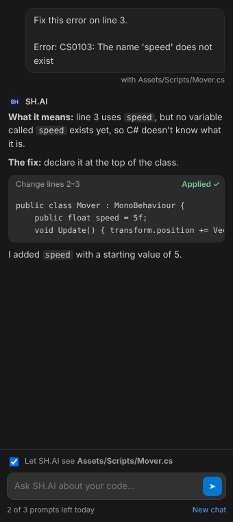

SH.AI Agent
SH.AI inside your code editor. It explains errors in plain words, points to the exact line causing them, and fixes or changes lines for you when you click Apply.
Also works in editors built on VS Code: Cursor, VSCodium and Windsurf.

Install it in four steps
- Download the file with the button above. It's called
sh-ai-agent-0.2.0.vsix. - Open VS Code and press Ctrl+Shift+X to open Extensions.
- Click the ⋯ menu at the top of the Extensions list, choose Install from VSIX…, and pick the file you downloaded.
- Click the new SH.AI icon on the left side bar, or press Ctrl+Alt+S.
What it does
Explains errors
Click the lightbulb on any underlined error and choose SH.AI: Explain this error. You get what it means, which line causes it, and why.
Fixes them with you
Choose SH.AI: Fix this error. SH.AI shows the change and you click Apply. Press Ctrl+Z to undo.
Changes a line
Put your cursor on a line, press Ctrl+Alt+E and say what to change, like “make the speed 10”.
Renames variables
Right-click a variable, choose SH.AI → Rename this variable, and every use in the file is updated.
Studies your script
Explains what the file does, part by part, with line numbers, plus a few improvements.
Checks for mistakes
SH.AI reads the file and underlines likely problems, even in languages your editor doesn't check.
Questions
Does it cost anything?
The download is free. Each question to SH.AI uses one prompt from your daily ScriptHunting allowance, the same as on the website: 3 a day without an account, or 10 a day when you sign in. Opening the panel and the lightbulb menu don't use prompts.
How do I sign in inside VS Code?
Click Sign in for more prompts at the bottom of the SH.AI panel. ScriptHunting opens in your browser with a code: check it matches the one in VS Code, sign in, and click Connect VS Code. SH.AI Agent then uses your account's daily prompts.
Which editors does it work in?
VS Code, and editors built on it such as Cursor, VSCodium and Windsurf. Versions for Visual Studio and JetBrains editors are planned.
Does SH.AI see my code?
Only when you ask it something. With “Let SH.AI see the open file” ticked, the open file (or the part around your cursor, for big files) is sent to answer your question. It isn't stored. You can untick it any time. See the Privacy Policy.
VS Code says the extension isn't from the Marketplace
That's normal for extensions installed from a file. SH.AI Agent will be added to the extension stores later, so you can install it with one click.